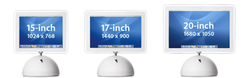

iMac G4 Owner's Guide
Originally written March 3, 2022. Revised August 23, 2022.

Pictured: 15-inch, 17-inch, and 20-inch iMac G4s. Courtesy of Apple Computer.
Overview of the hardware
With the success that was the entire line of G3 iMacs, Apple decided to milk the money cows yet again and put out something rather... strange. The result? The "sunflower" or "lampshade" iMac. Released January 7th, 2002, these were a massive step forward, backward, 180 degrees, and up and down compared to what came before it. Steve Jobs, (who didn't have afterthoughts of the engineering issues with some of his designs, e.g. the G4 cube, slot loading iMac, and maybe the Apple III) announced the new iMac that day and had also talked about certain advantages of the new design. He thought twice about the slot loading drives, and put a full-size DVD burner in. The actual computer was located in a white base, whereas the screen would be entirely separate, only attacked by a metal neck that swivels 180 degrees and moves/tilts up and down. The flat panel LCD, while worse at picture quality, was a step forward for a consumer PC, let alone a mac. These new iMacs came with the same enhanced PowerPC G4 (7450, more specifically 7451 on the early models) that were released with the Digital Audio G4 and the QuickSilver G4, in which the latter omitted any options for older 7410 or 7400 CPUs. Apple added in a fan (FINALLY!) with this computer, as they knew that the 7450 chip would be too much for passive cooling to handle. These new iMacs also came with nVidia graphics, more specifically the GeForce2 MX cards. Obviously, after this January 2002 event and until August 2004, revisions were made.
The first models were the 700MHz and 800MHz 15 inch iMac G4s, also known as Tessera. These used full PowerPC 7451 processors, sans L3 cache. They could be clocked at the aforementioned speeds upon order/request. For cache, they have a 1:1 L2 cache of 256KB, similar to the later slot-loading G3 computers. These run on PC100 SDRAM (133 recommended) which can be upgraded to 1GB, if you have one 512MB SO-DIMM and a 512MB DIMM. The graphics controllers used are the GeForce2 MX with 32MB of VRAM for 15-inch models, and the GeForce4 MX with 32MB of VRAM for 17-inch models. They run on Ultra-ATA/66 hard disks, so you can only install a drive of up to 128GB. These models use full-size 5.25" CD-ROM/CD-RW/DVD-ROM/DVD-RW drives, which is a good step in the right direction considering how problematic early slot-loading drives were on macs. These models have the identifier PowerMac4,2 for 15-inch and PowerMac4,5 for 17-inch models. In February 2003, the 15-inch iMac G4 was quietly revised to prevent booting from Mac OS 9. This has not been implemented into a firmware update on earlier models. If you have a 15-inch G4 iMac with the 4,2 identifier whose serial number is from Week 4 2003 or later (3rd digit after the first 2 indicates the year, next 2 digits indicate the week), it most likely won't boot from Mac OS 9 without using the unsupported G4s image from MacOS9Lives.
Whilst the 15-inch iMac got a rather sad revision, the 17-inch iMac got a revision with a completely different internal design, updating on the base of the original Tessera internal design from 2001. These had the same GeForce4 MX cards, but had 64MB of VRAM as opposed to 32. These also brought Ultra-ATA/100 to the iMac and increased the front-side bus to 133MHz. Say goodbye to SDRAM, as this model was dubbed the iMac with DDR! As the L3 cache was never commerically used on the G4 iMacs, Apple decided to go with the 7445 CPU which was smaller and did not have any L2 cache support. There are not much differences over the 7450, but the 74x5 chips were part of a newer stepping (maybe a better bin) and reached higher clock speeds. These iMacs had a stock speed of 1GHz, which was the only one offered. These computers also quietly bumped the maximum RAM cap to 2GB, making it much more upgradeable. The cooling on the newer iMacs had also improved, especially on the 17-inch model. This model has the identifier PowerMac6,1.
And at long last in September 2003, every model got a refresh to what was known as the iMac with USB 2.0. Along with the 15-inch and 17-inch iMacs, there was a new model that came out a little over 2 months later... a 20-inch iMac. The new "Horizon" internal design was not much different from the DDR design, but it added PC2700 DDR support and used a 167MHz front side bus. The 15-inch model got a slight bump with graphics, giving it a GeForce4 MX with the same 32MB of VRAM. The 17" and 20" models got the infamous GeForce FX 5200 """Ultra""" with 64MB of VRAM, which later proved to be an absolute mess, especially with software-only Core Image support, and software-only DirectX 9.0 support on PCs. Despite that low blow of a graphics chip, these were a good refresh, especially on the 15-inch model which remained about the same for nearly 2 years at that point. All USB 2.0 models have the identifier PowerMac6,3.
As a result, we have 3 different revisions of the 17-inch G4 iMac, 2 (not counting the OS 9 support removal, the internal design is still exactly the same) of the 15-inch model, and only 1 of the 20-inch model.
Flaws of the system
These computers have defintely improved over the slot-loading iMacs, but that doesn't mean it has no issues... because it does. The reason why it's hard to find a working G4 iMac is because of the excess heat and the unconventional cooling system. The entire system was cooled with a small copper block and pipe fused together that conducted heat towards the chassi of the computer, with the fan supposedly pushing it out. Unfortunately, to make way for all the storage devices (and to have it easy to work on?), the fan doesn't exactly reach the motherboard. Many faster G4 iMacs, especially the early models, have overheating problems.
The Power Supply is also quite the area of concern. It is divided into 2 parts, and looks a bit small for what it's driving. The cooling fan does effectively cool it, but the power supply is under quite a lot of strain. It drives a 15-inch LCD monitor, a PowerPC 7450-based system, a conventional PC optical drive, and a full 3.5" hard disk. The slot-loading iMacs even had some sort of an edge over these... merely because they ran CRTs and less power-hungry chips. Part of the blame does go on the newer PowerPC 7450 chips used.
Luckily, there is not much to worry about because these machines have a better chance of holding up compared to the slot-loading iMacs. The neck is well built and the computer itself feels solid. No cheapo LG made plastics here.
Maintenance level
Honestly, it's easier to keep these running compared to the slot-loading G3s. However, if you do get dust in the system, it's always best to clean it out. Sure, that goes for just about every computer, especially with a fan, but these can be a bit temperamental. Luckily, not as temperamental as a certain colorful machine that came before this... You will need to replace the thermal paste at where the heatsink touches the chassi, along with the CPU die. I've actually seen someone put paste to where the heatsink meets the motherboard, and I nearly lost my faith in humanity.
Overclocking... or not?
Unfortunately, these processors already seem to be running at their maximum potential, especially considering these didn't get the 7447 chips later on. You can get the 15-inch USB 2.0 models to run at 1.25GHz, and that's pretty much the highest you could go, and the highest I'd go. The DDR or 133MHz FSB G4 iMac doesn't have much information, and for the original G4 iMacs, you can go up to 800MHz without it crashing. I think certain newer machines may be able to get to 900MHz like the 1st generation eMacs. More information on overclocks soon, I promise. It's a massive task to carry out with lots of information scattered online.
Storage, RAM, and Wi-Fi
These take 3.5 inch IDE hard disks. Get a Western Digital 7200rpm disk of any size up to 120GB. If you want to install an SSD, use an mSATA drive of up to 128GB with a 44-pin IDE converter and a StarTech 44 to 40 pin IDE adapter.
The models before the DDR iMac can take up to 1GB of PC133 SDRAM using 1 512MB PC133 SDRAM DIMM on the motherboard side and 1 512MB PC133 SDRAM SO-DIMM on the user-accessible side. For DDR and USB2.0 models, a 1GB PC2700 SO-DIMM on the user-accessible side and a 1GB PC2700 DIMM on the motherboard side.
Pre-DDR models take 802.11b AirPort cards while DDR and USB 2.0 models take 802.11g AirPort Extreme cards.
The Sony-Optiarc AD-7220 IDE optical drive is perfect for these computers, and is detected as a 3rd-party Apple Shipping drive on later operating systems. If you're lucky enough, you could track down a working SuperDrive like the DVR-104 from 2002, but those use much older technology and are not exactly considered reliable.
Operating system
Only the 2002 models can run Mac OS 9.2.2 and versions of OS X up to 10.4.11. DDR models cannot run OS 9 and can go up to Mac OS X 10.5.8. I also recommend z970's Sorbet Leopard on later machines. Adelie Linux has also been confirmed to work, and OpenBSD seems to work as well. The Mac OS 9 for Unsupported G4s image also works, but it's difficult to dualboot with OS X without issues.
Conclusion
While these were not as popular as the previous iMacs, these were definitely a step forward. It's also kind of ironic that the eMac actually sold better than the newer iMacs, due to its cheaper price. This also prompted companies like Gateway to follow along with the Gateway Profile, which actually performed better than some of the iMacs, despite it being an absolute piece of garbage like the eOne was. The iMac G4 also suffered from stagnation with 15-inch models, which did not get updsted for nearly 2 years. As soon as the USB 2.0 model came out, more people just bought the eMac. It was cheaper than the 15-inch iMac, and actually had better graphics. These computers go on eBay for a considerable amount of money, as they are highly sought-after. I have 2 15-inch models, one I bought off eBay for ~$50 and one I found on the curb not too long ago. They're beautifully crafted, but not exactly beautifully engineered.
If you are offered one for free, you could definitely take it. They're becoming harder to find and are a must-have for computer hardware collectors. However, if you are looking to get into PowerPC macs and you want to buy one, this is not exactly a good system to start off with. My personal favorite is the Apple eMac, and you could run Mac OS X Tiger with great performance or even OS 9 patched for a couple of later models, excluding the 2005 eMac. Yes, I pretty much left this in for this writeup, but it just applies. These are definitely better than the G3 iMacs, but there are better options out there if you plan to do some mission-critical stuff that needs a PowerPC G4 processor.